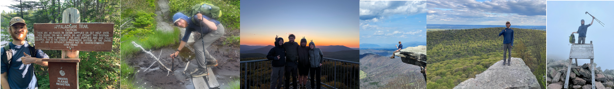

After completing my master's degree in December of 2025, I tapered up my cardio training in preparation of an AT thru-hike and set my sights for Valentine's Day. Five Months, two pairs of shoes, fourteen states, and 2197.7 miles later I had the experience of a lifetime. There were windy, rainy, and snowy days alongside heat waves and cold fronts. I learned how to be alone with my thoughts, that the body can quickly adapt to physical challenges, and that chipping away at a problem every single day can leave you in a completely new place in a matter of months. I met many lifelong friends along the journey, and many of them showed me great examples of a life well lived. The community on the trail is as mesmerizing as the views. Hostle owners, shuttle drivers, trail angels, and other hikers made me feel so grateful to have a supportive group around me. It was truly a life changing experience. I came out on the other side of Mt. Katahdin with an appreciation for life, nature, and friendship, as well as a desire to make my mark and rejoin the world with focus and vigor.

New Hampshire has 48 peaks above 4000 feet of elevation, each of them with great views. I started chipping away at this list in 2025 with a coworker and friend, where we climbed 3 peaks in a day. When I started the AT, I took as many small detours as I could in order to visit as many 4000 foot peaks along the trail. This let me reach the halfway point on the list and get up to 24 peaks completed. Now that I am done the AT, I am looking forward to seeing more peaks and finishing up the list. It's a great way to get a large sample size of tough hikes and great views in NH.
While these spots are not the next highest peaks after the 4000 footers, the 52 with a view list offers hikes with mountain peaks, waterfall views, and sometimes even a firetower! These spots range in difficulty from simple to very technical. I found out the hard way that this list and the "Terrifying 25" list are not mutually exclusive 😬. One of my favorite and most visited mountains, Mt. Monadnock, is on this list and I do my best to visit it every year. This list can easily be mistaken as an inferior list to the higher 48, but make no mistake. These 52 hikes are worth it!!
Originally I had only planned to focus on the 4000 foot peaks in New Hampshire, but when a friend told me that I had the opportunity to hit 11 of the 14 peaks on the Maine 4000 footer list just from the AT, I acquired a new side quest. I got to see Sugarloaf, Katahdin, Saddleback, The Bigelow's, and more. These peaks encompass my favorite mountain view (Katahdin), gorgeous lake overlooks, and enjoyably challenging rock scrambles.All I have left to summit are Hamlin Peak, North Brother, and Redington, which I hope to do before the summer's end.